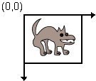
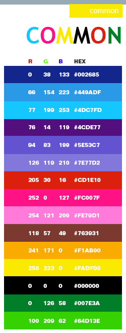
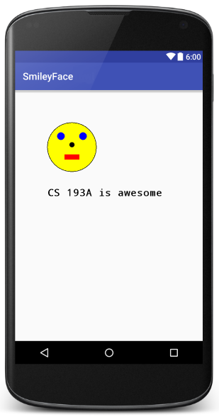
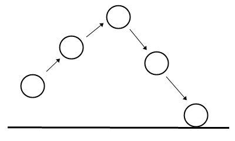
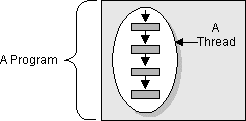
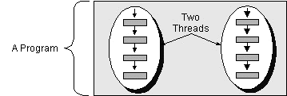
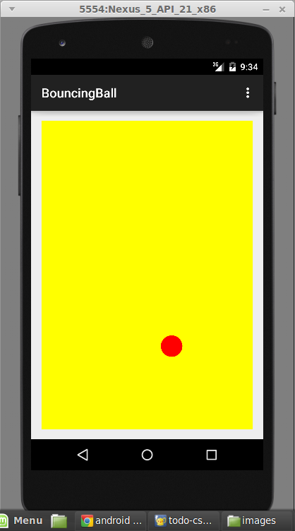
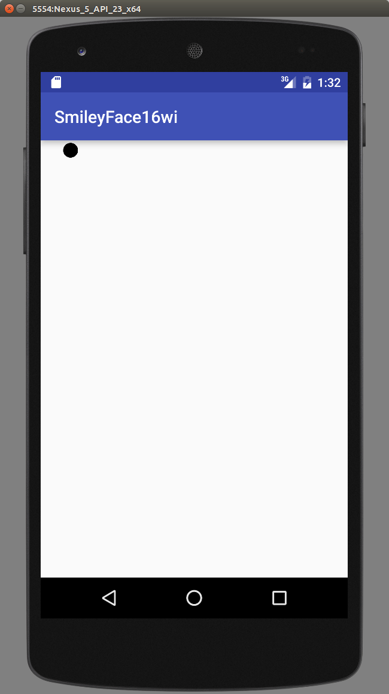
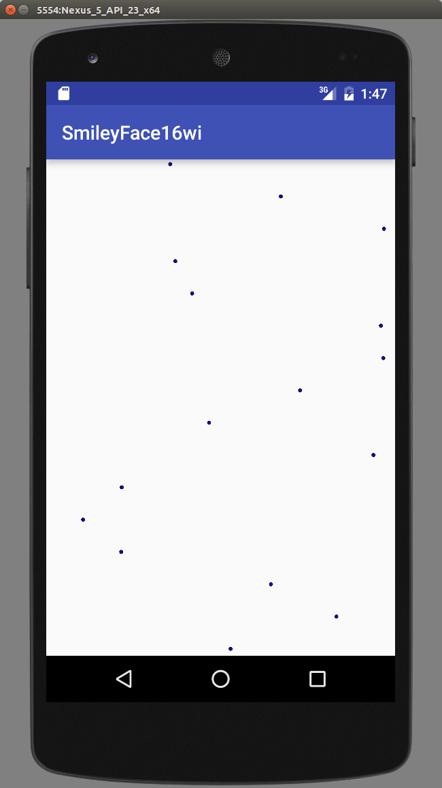

Drawing 2D graphics
- To draw our own custom 2D graphics on screen, we'll make a custom View subclass with the drawing code.
- If the app is animated (such as a game), we'll also use a thread to periodically update the graphics and redraw them.


Custom View template
public class ClassName extends View {
// required constructor
public ClassName(Context context, AttributeSet attrs) {
super(context, attrs);
}
// this method draws on the view
@Override
protected void onDraw(Canvas canvas) {
super.onDraw(canvas);
drawing code;
}
}
// recall: y-axis increases downward!

Using your custom view
- You can insert your custom view into an activity's layout XML:
<!-- res/layout/activity_main.xml -->
<RelativeLayout ...
tools:context=".MainActivity">
<your.package.name.MyViewClassName
android:layout_width="match_parent"
android:layout_height="match_parent"
...
/>
</RelativeLayout>
Another way to use custom view
- If your custom view takes up 100% of the activity screen, you can just add it to the activity in the Java code:
// MainActivity.java
public class MyActivity extends Activity {
...
@Override
public void onCreate(Bundle bundle) {
super.onCreate(bundle);
View myView = new MyViewClassName(this, null);
setContentView(myView);
}
}
Canvas object methods (link)
| Method | Description |
|---|---|
drawARGB(alpha, r, g, b); |
fill window with color (rgb=0-255) |
drawArc(...); |
draw a partial ellipse |
drawBitmap(bmp, x, y, null); |
draw an image |
drawCircle(centerX, centerY, r, paint); |
draw a circle |
drawLine(x1, y1, x2, y2, paint); |
draw a line segment |
drawOval(x1, y1, x2, y2, paint); * drawOval(new RectF(x1, y1, x2, y2), paint); |
draw oval/circle |
drawPoint(x, y, paint); |
color a single pixel |
drawRect(x1, y1, x2, y2, paint); * drawRect(new RectF(x1, y1, x2, y2), paint); |
draw rectangle |
drawRoundRect(x1, y1, x2, y2, rx, ry, paint);*drawRoundRect(new RectF(x1, y1, x2, y2), |
rounded rectangle |
drawText("str", x, y, paint); |
draw a text string |
getWidth(), getHeight() |
dimensions of view |
- * = requires Android 5.0+
Paint
- Many methods accept a
Paint, a color to use for drawing.- Create a
Paintby specifying an alpha (opacity) value, and red/green/blue (RGB) integer values, from 0 (none) to 255 (full).
- Create a
Paint name = new Paint();
name.setARGB(alpha, red, green, blue);
// example
Paint purple = new Paint();
purple.setARGB(255, 255, 0, 255);
purple.setStyle(Paint.Style.FILL_AND_STROKE);
// or FILL, STROKE
Paint methods (link)
| Method | Description |
|---|---|
getTextBounds("text", |
fill Rect with bounding rectangle that surrounds text |
getTextSize() |
returns text size in px |
getTypeface() |
returns font used |
measureText("text", start, end) |
returns string width |
setAlpha(alpha); |
set color transparency |
setAntiAlias(bool); |
whether to smooth pixels |
setColor(color); |
set paint color as RGB int |
setStrokeWidth(width); |
set line thickness |
setStyle(style); |
set paint styles |
setTextAlign(align); |
sets text alignment |
setTextSize(size); |
sets font size |
setTypeface(typeface); |
sets font |
Some common colors

| name | red | green | blue |
|---|---|---|---|
| black | 0 | 0 | 0 |
| blue | 0 | 0 | 255 |
| brown | 139 | 69 | 19 |
| cyan | 0 | 255 | 255 |
| dark gray | 64 | 64 | 64 |
| gray | 128 | 128 | 128 |
| light gray | 192 | 192 | 192 |
| green | 0 | 255 | 0 |
| orange | 255 | 200 | 0 |
| pink | 255 | 175 | 175 |
| purple | 255 | 0 | 255 |
| red | 255 | 0 | 0 |
| white | 255 | 255 | 255 |
| yellow | 255 | 255 | 0 |
Typeface (link)
- In Android, a font is called a
Typeface.- Set a font inside a
Paint. - (1) You can create a
Typefacebased on a specific font name.- styles:
NORMAL,BOLD,ITALIC,BOLD_ITALIC
- styles:
- (2) Or based on a general "font family" (recommended).
- family names:
DEFAULT,MONOSPACE,SERIF,SANS_SERIF
- family names:
- (3) Or from a file in your src/main/assets/ directory:
Typeface.create("font name", Typeface.STYLE) Typeface.create(Typeface.FAMILY_NAME, Typeface.STYLE) Typeface.createFromAsset(getAssets(), "filename")
- Set a font inside a
// example: use a 40-point monospaced blue font
Paint p = new Paint();
p.setTypeface(Typeface.create(Typeface.MONOSPACE, Typeface.BOLD));
p.setTextSize(40);
p.setARGB(255, 0, 0, 255);
Smiley face exercise

- Write a custom view that draws a "smiley face" figure.
- face: (100, 100), size 200, yellow
- eyes: (140, 140) and (230, 140), size 30, blue
- nose: (190, 180), size 20, black
- mouth: (170, 230), size 60x20, red
- text: (100, 400), monospaced bold font, size 40
Smiley face solution
public class FaceView extends View { ...
protected void onDraw(Canvas canvas) {
super.onDraw(canvas);
Paint yellow = new Paint(); // face
yellow.setARGB(255, 255, 255, 0);
yellow.setStyle(Paint.Style.FILL_AND_STROKE);
canvas.drawOval(new RectF(100, 100, 300, 300), yellow);
Paint blue = new Paint(); // eyes
blue.setARGB(255, 0, 0, 255);
blue.setStyle(Paint.Style.FILL_AND_STROKE);
canvas.drawOval(new RectF(140, 140, 170, 170), blue);
canvas.drawOval(new RectF(230, 140, 260, 170), blue);
Paint black = new Paint(); // nose
black.setARGB(255, 0, 0, 0);
black.setStyle(Paint.Style.FILL_AND_STROKE);
canvas.drawOval(new RectF(190, 180, 210, 200), black);
Paint red = new Paint(); // mouth
red.setARGB(255, 255, 0, 0);
red.setStyle(Paint.Style.FILL_AND_STROKE);
canvas.drawRect(170, 230, 230, 250, red);
black.setTypeface(Typeface.create(Typeface.MONOSPACE, Typeface.BOLD));
black.setTextSize(40f); // text
canvas.drawText("CS 193A is awesome", 100, 400, black);
}
}
Targets exercise
- Write an app whose main activity displays a custom view that draws a "target" figure.
- Outer red circle fills 100% of view's width/height.
- 5 total circles, all centered; 3 red, 2 white.
- Each circle is 20% smaller than the last:
- the first (red) is 100% of the window size,
- the second (white) is 80% of the window size,
- the third (red) is 60% of the window size,
- the fourth (white) is 40% of the window size,
- the fifth (white) is 20% of the window size.
- (Challenge: Use a constant for # of ovals.)
Targets solution
public class TargetView extends View {
public TargetView(Context context, AttributeSet attrs) {
super(context, attrs);
}
@Override
protected void onDraw(Canvas canvas) {
super.onDraw(canvas);
Paint red = new Paint();
red.setARGB(255, 255, 0, 0);
Paint white = new Paint();
white.setARGB(255, 255, 255, 255);
int w = canvas.getWidth(), h = canvas.getHeight();
for (int i = 0; i < 5; i++) {
canvas.drawOval(new RectF(/*x*/ w*i/10, /*y*/ h*i/10,
/*w*/ w*(10-i)/10, /*h*/ h*(10-i)/10),
/*paint*/ i % 2 == 0 ? red : white);
}
}
}
Bitmap images (link)
- Draw an image (such as .png or .jpg) using the
Bitmapclass.Bitmap name = BitmapFactory.decodeResource(getResources(), R.drawable.ID);
// example: draw heart.png on screen at (0, 0)
Bitmap bmp = BitmapFactory.decodeResource(
getResources(), R.drawable.heart);
canvas.drawBitmap(bmp, 0, 0, /* paint */ null);
// you can also scale a Bitmap to a given size
Bitmap bmp2 = Bitmap.createScaledBitmap(bmp,
newWidth, newHeight);
Lib: GCanvas

- The Stanford Android library contains a
GCanvasclass that more easily handles drawing and animation.- Replicates functionality of CS 106A Java library (by Prof. Eric Roberts)
public class MyCanvas extends GCanvas { ...
- The model for
GCanvasis different from a regularView:c.drawRect()GRect,GOval,GLabelonDrawinit- animation →
animate,onAnimateTick
GCanvas methods
(link)
| Method | Description |
|---|---|
add(gobject); add(gobject, x, y); |
add graphical object to canvas at top of z-order |
contains(gobject) |
true if this graphical object is in canvas |
getElement(index) |
returns graphical object at given index in list |
getElementAt(x, y) |
top object at given pixel, or null if none |
getElementCount() |
returns number of graphical objects |
init() |
override this to write initialization code |
remove(gobject); |
remove graphical object from canvas |
removeAll(); |
removes all graphical objects from canvas |
sendBackward(gobject); sendForward(gobject); sendToBack(gobject); sendToFront(gobject); |
adjust object's position in Z-ordering |
animate(framesPerSec); animationPause(); animationResume(); animationStop(); isAnimated() |
animation methods |
onAnimationTick() |
override for code to run on each anim. frame |
createFont(name, style) |
create a Typeface |
createPaint(red, green, blue) |
create a Paint |
Types of GObjects
| Class | Description |
|---|---|
GColor |
class with many Paint constants including BLACK, BLUE, RED, WHITE, etc. |
GCompound |
container for treating other objects as a group |
GImage |
represents a bitmap image |
GLabel |
a text string drawn in a given font |
GLine |
connection between two points |
GObject |
superclass for other graphical object classes |
GOval |
a circle or ellipse |
GPolygon |
connects arbitrary points to form a polygon |
GRect |
a square or rectangle |
GSprite |
wraps a GObject and adds methods useful for games |
- For details on each type of GObject, visit the library Javadoc page.
- Many methods and behaviors match the Stanford 106A library.
Smiley face with GCanvas
public class FaceView extends GCanvas { ...
public void init() {
GOval face = new GOval(100, 100, 200, 200); // face
face.setColor(GColor.BLACK);
face.setFillColor(GColor.YELLOW);
add(face);
GOval eye1 = new GOval(140, 140, 30, 30); // eyes
eye1.setFillColor(GColor.BLUE);
GOval eye2 = new GOval(230, 140, 30, 30);
eye2.setFillColor(GColor.BLUE);
add(eye1);
add(eye2);
GOval nose = new GOval(190, 180, 20, 20); // nose
nose.setFillColor(GColor.BLACK);
add(nose);
GRect mouth = new GRect(170, 230, 60, 20); // mouth
mouth.setFillColor(GColor.RED);
add(mouth);
GLabel label = new GLabel("CS 193A is awesome", 100, 400);
label.setFont(Typeface.MONOSPACE, Typeface.BOLD, 40f);
add(label);
}
}
Animation via redrawing
- To animate a view, you must redraw it at regular intervals.
- On each redraw, change variables/positions of shapes.
- Force a view to redraw by calling its
postInvalidatemethod.- But you can't just do this in a loop; this will lock up the app's UI and lead to poor performance.
- You must instead do it in another thread of execution.

A basic animation loop
- The code to animate a view must do the following in a loop:
- process any user input (mouse touch events, key presses, etc.)
- update the view state (move any moving objects, handle collisions, etc.)
- tell the view to redraw itself (which happens on the main UI thread)
- pause for some number of milliseconds
// in MyView.java
public void myAnimationLoop() {
while (true) {
// 1) process user input
// 2) update your game's state
my game update code goes here;
// 3) tell view to redraw self on main UI thread
postInvalidate();
// 4) pause
try {
Thread.sleep(50); // 50ms = 20fps
} catch (InterruptedException ie) { break; }
}
}
Threads
- thread: A "lightweight process"; a single sequential flow of execution or isolated sub-task within one program.
- A means to implement programs that seem to perform multiple tasks simultaneously (a.k.a. concurrency).
- Threads within the same process share data with each other.
- "shared-memory concurrency"
- i.e., Variables created in one thread can be seen by others.
- a thread is sometimes called a lightweight process


Using a Thread
- Your animation loop must run in a thread to work properly.
- You can create a
Threadby passing it aRunnableobject with arunmethod containing the code to execute.- other
Threadmethods:start,stop,sleep,isRunning,join
- other
Thread thread = new Thread(new Runnable() {
public void run() {
// code to execute in thread goes here
myAnimationLoop();
}
});
thread.start();
Avoid threads w/ library
GCanvasincludes ananimatemethod that will call anonAnimateTickcallback at specified intervals.- runs in a separate thread under-the-hood
// library eliminates threads, auto-redraws after each frame
public class MyView extends GCanvas { ...
...
public void init() {
animate(FPS); // frames/sec
}
// called once per frame of animation
@Override
public void onAnimateTick() {
super.onAnimateTick();
move/update shapes;
}
}
Bouncing ball exercise

- Write an app that draws a bouncing red ball.
- The ball moves in the x/y dimensions and bounces back when it hits any edge of the screen.
- background color: yellow
- ball color: red
- ball size: 100 x 100px
- ball velocity: < 80px per in x/y direction (random)
- ball should update 50 times per second
Bouncing ball (x only) w/ library

// library eliminates threads, auto-redraws after each frame
public class BounceView extends GCanvas { ...
private GOval ball;
private int dx = 5;
public void init() {
ball = new GOval(10, 10, 50, 50);
ball.setFillColor(GColor.BLACK);
add(ball);
animate(50); // 50 frames/sec
}
// called once per frame of animation
@Override
public void onAnimateTick() {
super.onAnimateTick();
ball.setX(ball.getX() + dx);
if (ball.getRightX() >= getWidth()
|| ball.getX() <= 0) {
dx = -dx; // bounce
}
}
}
Raindrops exercise

- Write an app that looks like falling rain.
- Every half-second, a new raindrop will appear.
- The raindrops have random x-coordinates and start at the top (y=0).
- Each raindrop is a 10px blue circle.
- The drops fall 5px every frame, at 50 fps.
Raindrops w/ library
// library eliminates threads, auto-redraws after each frame
public class RainView extends GCanvas { ...
private int dy = 5; // fall by 5px/frame
private int frames = 0;
public void init() {
animate(50); // 50 frames/sec
}
// called once per frame of animation
@Override
public void onAnimateTick() {
super.onAnimateTick();
frames++;
if (frames % 25 == 0) {
// add a raindrop
GOval raindrop = new GOval(10, 10);
raindrop.setFillColor(GColor.BLUE);
RandomGenerator randy = RandomGenerator.getInstance();
float randX = randy.nextFloat(0, getWidth() - 10);
add(raindrop, randX, 0);
}
// make all the raindrops fall
for (GObject obj : this) {
obj.translate(0, dy);
}
}
}